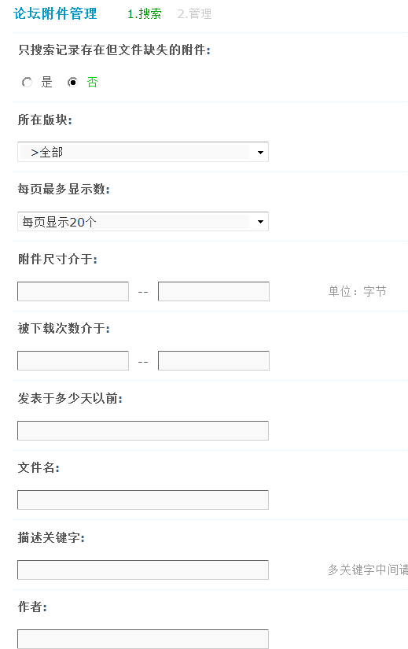
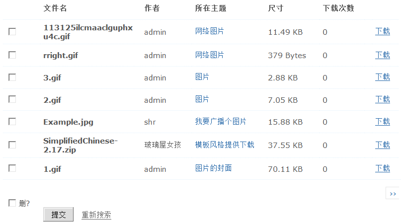
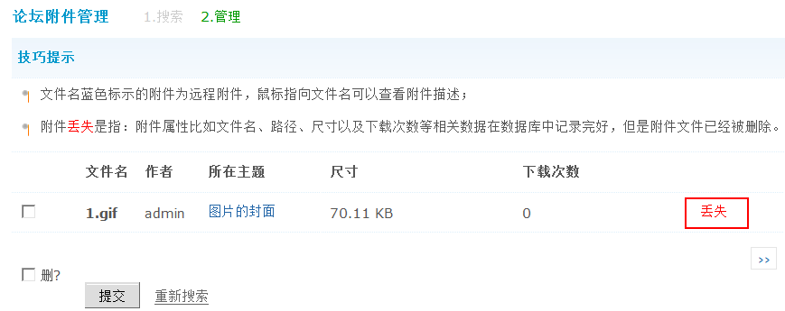

论坛附件管理
附件是论坛中重要的一部分，用户需要使用附件功能进行图片展示，文件共享等交流活动。因此对附件的有效管理也就变得十分重要。
论坛自带了对附件的管理功能。通过这个管理功能，管理员可以根据条件搜索附件，对搜索到的附件进行删除、下载、打开附件所在主题，还可以对附件的数据表进行整理，将服务器上已经不存在的附件的信息在数据表中删除，减小附件表的数据量，进而增加附件检索的速度。
操作路径：【后台】=>【内容】=>【论坛附件管理】
一、论坛附件的管理操作
1、搜索条件的说明
1)只搜索记录存在但文件缺失的附件
选择“是”，则只会搜索数据库中存在附件记录而附件文件夹中并不存在的附件。
2)所在版块
搜索特定板块的附件，可以选择全部版块，也可以搜索指定版块。
3)每页显示数
每页显示多少个附件。
4)附件尺寸介于
搜索介于某个尺寸的附件，单位为字节，不填写为不限制。
5)被下载次数介于
搜索下载次数介于某个数的附件，不填写为不限制。
6)发表于多少天以前
搜索多少天前上传的附件，不填写为不限制。
7)文件名
对文件名进行模糊查询，不填写为不限制。
8)描述关键字
按附件描述的关键字进行模糊搜索，多个关键字可以用逗号隔开，不填写为不限制。
9)作者
搜索由某个会员上传的附件，不填写为不限制。
这些参数可以根据其中之一进行搜索，也可以根据两个或两个以上的条件进行查询。
2、附件管理
附件的管理，主要包括附件的删除、下载、查看附件所在的路径和查看附件所在主题。当按查询条件提交以后，会看到类似下图所示的搜索结果：
搜索出来的附件的详细信息都整齐排列出来了，需要删除某个附件的话可以勾选相应的附件前面的复选框，然后点击下面的“提交”即可完成操作。如果要删除所有搜索到的附件，可以勾选“提交”按钮左边的复选框，所有附件就会被删除干净。这里的删除包括删除附件在数据的信息和真实的附件文件，所以在删除之前一定要谨慎操作。
点击最右面的“下载”链接，可以下载到这个附件。点击所在主题下面的链接，可以访问到发布这个附件的相应主题。
二、删除冗余附件
附件丢失是指：附件属性比如文件名、路径、尺寸以及下载次数等相关数据在数据库中记录完好，但是附件文件已经被删除。
1、搜索的时候在“只搜索记录存在但文件缺失的附件:”下面的单选框选“是”。如下图所示：
2、搜索出来的列表就是文件不存在的附件，根据自己的情况将这些附件记录删除。如下图所示：
删除这些附件可以减小附件表的数据量，进而增加附件检索的速度。